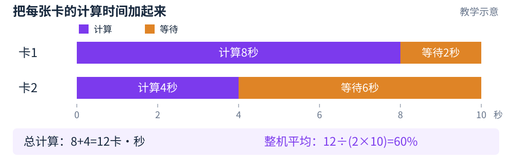
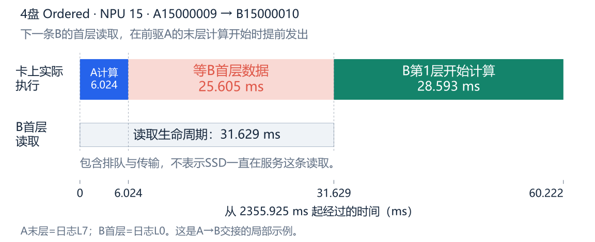
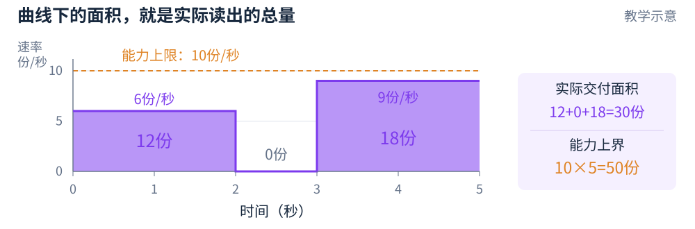
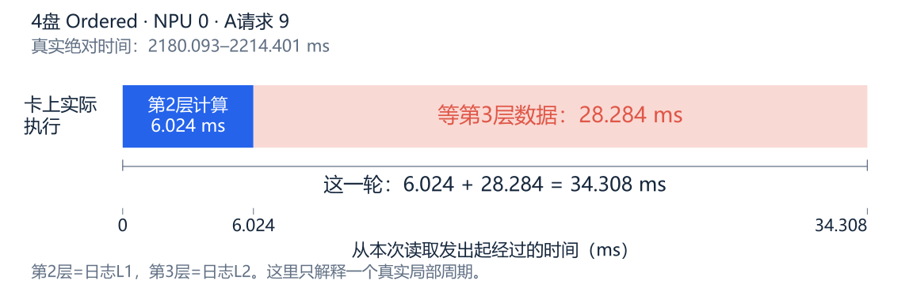
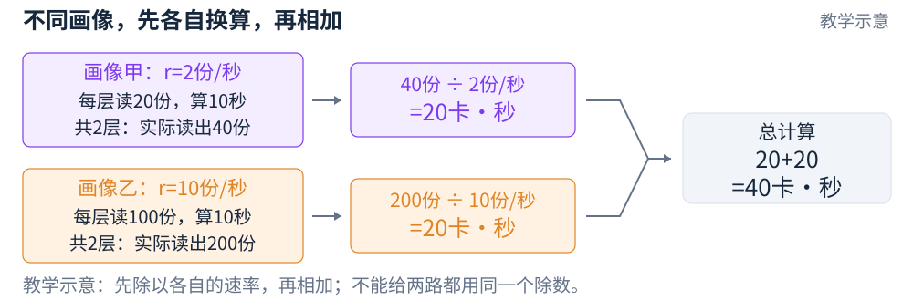
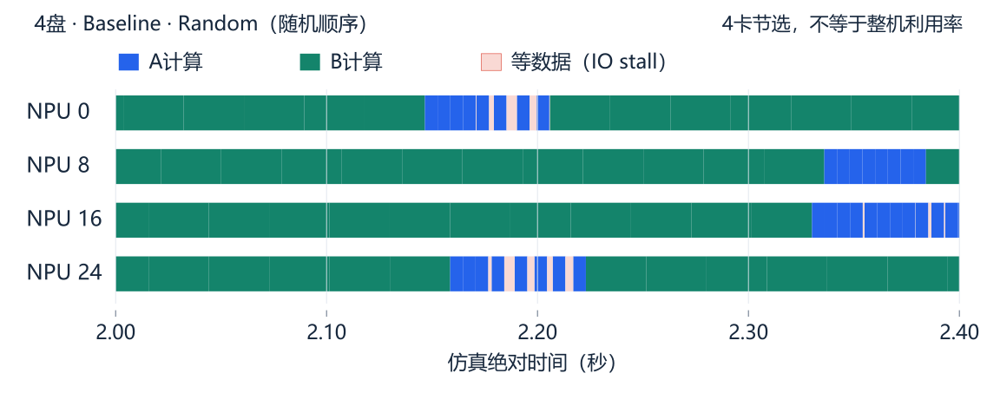
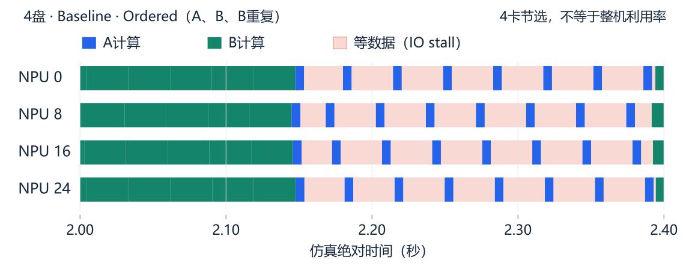

NPU 可以理解成负责计算的“工位”。它需要的数据还没送到时，即使有请求排队，也可能只能等。
利用率 = 真正计算的时间 ÷ 观察的总时间这个小例子：7 ÷ 10 = 70%。
本项目说的“平均 NPU 利用率”，统计的是计算时间占比。它不是磁盘带宽使用率，也不是硬件峰值算力使用率。
整本教程只围绕一件事：下一步要计算时，数据到了没有？
可以分段读，不必一次记住1–5 页：认识计算、等待和三层调度。
6–18 页：用小数字学求和、速率、积分。
19–24 页：理解总工作量、开环与闭环。
25–30 页：回到 32 张卡的真实实验。
31–35 页：逐组回看手稿、自测与结论。
每个难公式都配中文读法；原稿条件不完整的地方会直接标出。
一次输入中，一部分旧内容的 KV 可以复用，另一部分需要新计算。本实验中，可复用的 KV 要从 SSU 读取。SSU 就是提供数据的存储设备。
A：读得多，算得短
总输入 128K
其中只新增 256 token
175.66 MiB每层读取量6.02 ms每层计算时间B：读得少，算得久
总输入 32K
其中新增 4096 token
38.50 MiB每层读取量28.59 ms每层计算时间token 是文本的计量单位；这里 K=1024。miss 指需要新计算的部分：若用百分比表示，就是“新增 token 数 ÷ 总 token 数”。
不要只说“长流、短流”。A 的总输入更长，但计算反而更短。后面固定使用蓝色 A、绿色 B。
读取量、计算时间均取原始 data，没有缩放。若 KV 已在 NPU 本地显存，就不应再算一次 SSU 读取；本页描述的是这次实验设置。
这些长度、读取量和计算时间合在一起，称为一种请求“画像”。
对照：手稿①：基本假设 1、2
本次一个请求要依次算 8 个模型层，像完成 8 道顺序工序。不是一次读完、算完就结束。
第 1 层第 2 层第 3 层第 4 层第 5 层第 6 层第 7 层第 8 层
当前层开始计算时，可以提前读取下一层的数据。这叫预取。只要下一层数据在当前计算结束前到齐，读取就被“藏”进了计算时间。
等待 = 读取总耗时 − 能重叠的计算时间若结果小于 0，就按 0 算。图中：8 − 4 = 4 ms。
读取总耗时包括排队和传输；下方灰条不表示磁盘一直在为这条请求工作。
这是教学例子。起点是假设当前层数据已到齐。第一层没有前驱请求时，还需要先拿到首层数据。
对照：手稿①：每层先到数据，才能计算
L1 · 分卡这条请求交给哪张 NPU？
例如：把某条 A 交给 NPU0，把另一条 B 交给 NPU1。
↓ 每张卡有了自己的待办队列
L2 · 排请求同一张卡先处理谁、后处理谁？
例如：NPU0 执行 A→B→B，或 B→A→B。
↓ 当前计算和预取产生读取请求
L3 · 排读取已经提交的读取块，怎样获得盘的服务？
Baseline 在每块 SSU 的普通队列 Path0 按块排队，先到先服务，叫 FIFO。每块盘各有自己的队列。
L3 让数据早点到，可能让下一条请求早点开始；但这不等于修改了 L2 的请求名单。L3 也不能直接读取尚未提交的未来数据。
对照：手稿①②：L1 / L2 / L3
第一个问题一层算多久、读多久，会等多久？
这会用到除法、取大值 max、取小值 min，以及 μ 这个“平均推进速度”。
第二个问题很多张卡、很多小段时间，怎样加起来？
Σ 就是按卡或按类别相加；∫ 就是沿着时间相加。下面会从表格一步步过渡。
第三个问题总工作量固定，为什么调度还可能有用？
关键是：同样的工作，是否一定在同样长的时间里完成？
原图里的 U 有时像“平均利用率”，有时又像“忙卡总数”。我们会把两者分开，避免跟着符号混淆。
这里有两张卡，编号 i=1、2。i 只是编号，不是乘号。先观察同样长的 10 秒：

教学示意：紫色是计算，橙色是等待；不是实验画像 A/B 的配色。
Σᵢ Hᵢ = H₁ + H₂ = 8 + 4 = 12 卡·秒H 表示这张卡实际计算了多久；Σ 读作“把各项加起来”。
平均 U = 12 ÷ (2 × 10) = 60%N 表示卡数；本例 N=2，本次实验 N=32。
也可以看各卡百分比：80%＋40%＝1.2 张等效忙卡。再除以 2，得到整机 60%。1.2 张卡和 60% 是两种不同单位。
手稿把各卡利用率直接相加，后面又说满利用率是 1，口径不一致。若要表示平均 U，就要补上“÷N”。
停一下，自己试一试32 张卡全部忙，各卡的 100% 相加是什么？
核对：32 张等效忙卡；除以 32，整机利用率才是 100%。
对照：手稿①：U(t) 的求和；手稿②：总计算量中的 U
Cᵢ = tc mᵢ Lᵢ = α hᵢ
| 符号 | 中文意思 |
|---|
| m | 要补做计算的 token 数，也就是 miss 的数量 |
| h | 可复用、但需要从盘读回 KV 的 token 数 |
| t_c | 假设每个新增 token 要花的计算时间 |
| α（读作 alpha） | 假设每个复用 token 对应多少数据 |
| C / L | 这一层的计算时间 / 读取量；本教程先前把读取量写成 V，L=V |
本页练习：每个新 token 假设花 0.004 秒，1000 个就花 4 秒；每个命中 token 对应 0.01 份材料，4000 个就要读 40 份。
式子里省略了乘号：t_c mᵢ 就是 t_c × mᵢ；α hᵢ 就是 α × hᵢ。
换成大白话“每个要多少 × 一共有多少个 = 总共要多少”。这里故意用秒和份材料，先不做复杂单位换算。
回到实验：读取确实按固定 KV 大小换算；计算却不能跨 A/B 共用一个 t_c。B 的新增 token 是 A 的 16 倍，计算时间只有约 4.75 倍，因为上下文不同。
因此这些比例式是带条件的模型。实验直接用 data 的真实画像成本，没有强迫计算时间满足同一个比例系数。
对照：手稿①：基本假设 1、2
本页假设每层计算 4 秒，下一层要读 8 份材料；读取一直能得到 1 份/秒，没有额外排队，所以读取要 8 秒。
一次交接用时 = max(4, 8) = 8 秒max 就是“取两个数中较大的那个”：要等计算和读取都结束。
平均推进速度 = 1 ÷ 8 = 0.125 层/秒倒数就是“一除以它”。8 秒推进 1 层，也就是 80 秒推进 10 层。
也能从两个限制分别算：计算最多每秒做 1÷4＝0.25 层；存储最多每秒供应 1÷8＝0.125 层的数据。取较小的速度，因为更慢的一方限制推进。
μᵢ = min(1/Cᵢ, bᵢ/Lᵢ)
换成大白话min 读成“取较小值”。b 是实际可获得的服务速率，L 是一层需要的数据量。
手稿写“每秒完成数”，没有明确完成的是层还是请求。C、L 若按一层定义，μ 就是层/秒。本次一个请求有 8 层，不能把一层当成一整个请求，也不能直接当 TTFT。
本页是固定画像、稳定重叠的理想模型，忽略启动和结尾。若读取含排队，先使用真实读取耗时，不能直接拿盘标称速度代入。
对照：手稿①：μ 的 min 公式及“每秒请求数”
80 秒能推进 10 层；每层算 4 秒，所以实际计算 40 秒，其余在等。利用率就是 40÷80＝50%。
uᵢ = μᵢ × Cᵢ = 0.125 × 4 = 0.5 = 50%小写 u 先表示一张卡的周期平均；不是某个时刻的开关状态。
这张卡想在 4 秒内拿到 8 份，需求速率是 8÷4＝2 份/秒。它只得到 1 份/秒，是需求的一半，所以本模型中计算占比为一半。
U(t) = Σᵢ μᵢ(t) Cᵢ = Σᵢ min(1, bᵢ(t)/Bᵢ)
μᵢCᵢ = Cᵢ × min(1/Cᵢ, bᵢ/Lᵢ)
= min(1, bᵢCᵢ/Lᵢ) = min(1, bᵢ/Bᵢ)第一步代入 μ；C>0，可乘进两项。再用 Bᵢ=Lᵢ/Cᵢ，所以 bᵢCᵢ/Lᵢ=bᵢ/Bᵢ。
单卡 uᵢ = min(1, bᵢ/Bᵢ)
整机平均 U = (u₁ + u₂ + … + uN) ÷ N“…”只是表示中间还有同样的项。上限 1 就是 100%。
这是固定画像、供给规律明确时，把相同周期反复执行后得到的平均模型。手稿把它叫“瞬时利用率”过于直接；真实系统一边预取一边计算，某瞬间的盘速不能直接当某瞬间的计算比例。
停一下，自己试一试需求 2 份/秒，供给提高到 4，能得到 200% 利用率吗？
核对：不能。min(1, 4÷2)=1，最多 100%。
对照：手稿①：U 等式链、结论①
假设要在 4 秒计算期间拿到 40 份材料，平均需要 10 份/秒。但并不要求每一秒都恰好送 10 份：前 2 秒送齐，也完全可以。
实际供给
SSU 真正读出多少；经过链路后，NPU 真正收到多少。
判断 IO stall 的方法：计算结束时，下一步需要的数据还没收齐。后来突然以很高带宽补齐，也不能追回已经等掉的时间。
本次 A 的内部层要在约 6.02 ms 内读完 175.66 MiB，参考需求约 28.48 GiB/s。B 内部层的参考需求约 1.31 GiB/s；A→B 首层则不能使用 B 自己的计算时间。
手稿的大写 Bᵢ 是第 i 项需求，小写 bᵢ 是获得的供给；没有下标的大写 B 是盘的总容量。它们也都不是实验画像 B 的名字。
对照：手稿①：Bᵢ=Lᵢ/Cᵢ，需求与供给
B 首层在 A 最后一层计算开始时就发起预取。但 A 只算 6.02 ms；B 自己的 28.59 ms 计算，此时还没开始。

真实事件按同一个起点展示：NPU15，B 请求 15000010；前驱为 A 请求 15000009。
B 首层等待 = 31.63 − 6.02 = 25.61 ms31.63 ms 是从发起读取到 NPU 收齐的总耗时，包含排队。
B 自己算得久，不能帮助它隐藏开始计算之前的首层等待。它只能借用前一个 A 最后一层的计算时间。
A 计算结束时，B 所需的 38.5 MiB 还一字节都没到 NPU。B 只能等到收齐后再开始计算。B 的后续层能借用自己的长计算时间，情况可能很好。
对照：手稿公式回到真实交接：C 应当取哪一段
Σᵢ Bᵢ ≤ B；若 bᵢ=Bᵢ，则 U=1，否则 U<1
两张卡的需求是 2、5 份/秒，盘最多 10 份/秒。2＋5≤10，意思是：理想地分配时，容量足以同时覆盖两项需求。
| 有数据待读时，两卡可获得的速率 | 各卡利用率 | 整机平均 |
|---|
| 2、5 | 100%、100% | 100% |
| 3、6 | 100%、100% | 100% |
第二行没有“恰好等于需求”，仍然满利用率。所以手稿的“否则 U<1”需要改：达到或超过需求都可饱和；超过的部分不会让计算超过 100%。
U(t) = Σᵢ bᵢ(t)/Bᵢ …
这里不能直接去掉 min：只有每个 bᵢ≤Bᵢ 时，min(1,bᵢ/Bᵢ) 才等于 bᵢ/Bᵢ。求平均仍须除以卡数。
上面讲的是理想供给。真实 FIFO 还要问：数据有没有按时送到？总量能分得开，不代表现有队列就会按正确时机送。下一页看反例。
更快时会提前读完，不代表整段一直收到表中的速率。原稿写有“待补充”，尚非完整机制；本次 Baseline 也没有不可互借的固定配额。实际还要逐盘、逐时刻检查。
对照：手稿①：不过载、1.1/1.2 两个分支
想象一块盘每秒送 10 份材料。大读取需 40 份，但有 20 秒计算可等；小读取需 10 份，却只有 2 秒计算可等。
两卡参考需求 = 40÷20 + 10÷2 = 7 份/秒7 小于盘容量 10：通过平均速率的检查。
大读取先做：占 4 秒，小读取再做 1 秒。小卡在第 2 秒就算完了，却要到第 5 秒才能拿齐，等了 3 秒。
小读取先做：1 秒就送齐，满足它的 2 秒截止；大读取第 5 秒完成，也赶得上它的 20 秒截止。
FIFO 只认先后，不知道谁更急。相同工作量、相同总带宽，交付时机不同，等待就可能不同。
这是一次交接的教学构造：两份读取预先就绪，明确全部大块先或全部小块先，忽略链路。不能冒充本次 AB 的实测欠载反例；本次 27 格均有逐盘名义需求超限。
对照：手稿①②：名义欠载时仍可能因服务先后等待
两卡每层都算 10 秒；甲每层读 20 份，需求 2 份/秒；乙每层读 100 份，需求 10 份/秒。盘只有 10 份/秒，总需求 12，确实不足。
| 理想供给方案 | 甲 / 乙获得 | 甲 / 乙利用率 | 平均 U |
|---|
| 按需求比例分 | 约 1.67 / 8.33 | 83.33% / 83.33% | 83.33% |
| 先满足低需求甲 | 2 / 8 | 100% / 80% | 90% |
第二行算起来很简单：甲是 2÷2＝100%；乙是 8÷10＝80%；平均是 90%。总供给两行都是 10，却得到不同平均利用率。
换成大白话没有满利用率时，同样多给一点带宽，低需求卡的计算占比可能增加得更多。达到 100% 后，再给也不能继续增加。
Bᵢ 从小到大分配，瞬时利用率最高
例如两卡的供给都从 0 增加到 1 份/秒：甲的利用率增加 1÷2＝50 个百分点，乙增加 1÷10＝10 个百分点。达到各自需求后就不再增加，因此先把小需求卡填满更有利。
若画像固定、允许任意分配、唯一目标是最大化平均 U，这种从小需求开始满足的办法是该模型的最优分配。它不是瞬时物理规律，也没有同时保证公平、TTFT 或本次 Once 的效果。
本页供给是理想稳定模型；甲乙不是本次 A/B。模型用于理解取舍，不是新增仿真结果。
对照：手稿①：结论①、情况 2 过载

教学图：实际速率的矩形面积相加，就是已服务的数据量。
| 时间段 | 每秒实际送多少 | 持续多久 | 这一段送了多少 |
|---|
| 0–2 秒 | 6 份/秒 | 2 秒 | 6×2＝12 份 |
| 2–3 秒 | 0 | 1 秒 | 0×1＝0 份 |
| 3–5 秒 | 9 份/秒 | 2 秒 | 9×2＝18 份 |
12 + 0 + 18 = 30 份
用手稿记法：∫₀⁵ b(t) dt = 30 份0 到 5 表示从第 0 秒累计到第 5 秒；b(t) 是时刻 t 的速率；dt 是一小段时间。
换成大白话一小段里：速率 × 这段有多长＝这一段的数据量。把所有小段相加，就是积分。速率变化更细时，也还是这个想法。
Σ 通常按“谁”相加；∫ 在这里按“时间”相加。看到 ∫Σ，就是先把同一时刻各项加起来，再把这段时间累计起来。
对照：手稿①末部及②：所有时间积分的读法
下面两段各长 1 秒，因此每格“每秒速率×1秒”就是这一格的数据量。先只看收到多少份：
| 实际数据量 | 第 1 秒 | 第 2 秒 | 各自合计 |
|---|
| 甲 | 2 份 | 4 份 | 6 份 |
| 乙 | 3 份 | 1 份 | 4 份 |
| 每秒合计 | 5 份 | 5 份 | 10 份 |
先按列加，再沿时间加(2＋3)＋(4＋1)＝10 份
每个时刻先把各项相加，这是 Σ；再沿时间累计，这是外面的 ∫。
先沿时间加，再把各项加起来(2＋4)＋(3＋1)＝10 份
先求甲全段收到的 6 份、乙的 4 份，再合在一起。
∫₀ᵀ Σᵢ bᵢ(t)dt = Σᵢ ∫₀ᵀ bᵢ(t)dt
换成大白话同样一批格子，每格都算一次，只是相加顺序不同，所以总数一样。对本次有限卡数和正常服务速率，这一步可以保留。
但“交换相加顺序”不等于“可以把不同的换算系数变成同一个”。后面读 W_C 时，还要记住每类自己的 Bᵢ。
对照：手稿②：交换求和与时间积分
下一层需要 8 份；当前计算从第 0 秒开始，到第 4 秒结束。每一格都长 1 秒：
| 实际每秒收到 | 0–1 | 1–2 | 2–3 | 3–4 | 4–5 |
|---|
| 提前送 | 4 | 4 | 0 | 0 | 0 |
| 晚送 | 0 | 0 | 0 | 4 | 4 |
提前送：前两格 4＋4＝8，第二秒就收齐。后面带宽为零，卡仍能完成当前计算，并按时开始下一层。
晚送：到第 4 秒只累计收到 4；还缺 4。第 5 秒才收齐，所以卡在第 4–5 秒等了 1 秒。
截止前到达量 = ∫开始预取计算结束 实际到达速率 dt要把目标数据收齐，而不是要求曲线每一刻都高于参考需求。
本例需求是 8÷4＝2 份/秒。晚送在等待期间的实际速率是 4，高于需求，卡却仍在等，因为还没收齐。
因此，手稿里的“带宽决定瞬时利用率”不能直接当成真实时序的公式。NPU 可以在当前没读数据时计算，也可以在高速补数据时等待。
真实 A→B 首层同样看累计到达：A 算完时 B 的 38.5 MiB 尚未到达，之后补齐才恢复。要检查 NPU 接收端；SSD 读出后还可能经过接收链路。
对照：手稿①：瞬时带宽与 U(t) 的使用边界
四盘合计 160 GiB/s，且一直忙。在这个稳定读取轮次里，每张卡平均得到 160÷32=5 GiB/s。注意：这是轮次平均，实际服务仍是一块一块发生。

真实 NPU0 的完整交接：当前层计算结束后，继续等下一层数据。
每卡读 175.66 MiB，按周期平均 5 GiB/s，需要 34.31 ms。
这段只算 6.02 ms，其余约 28.28 ms 都在等。
利用率 = 6.02 ÷ 34.31 ≈ 17.56%完整精度计算为 17.558692%；用两位小数手算会略有差异。
此时各卡的层开始时间已经错开，仍然会等。“错开”不是“数据一定来得及”的保证。
该共同窗口的 32 卡实际利用率也为 17.56%。但这仅是 2.180093–2.214401 秒的局部，不是整场 U。全 A 的需求本就远超容量，不能把这段全部损失都算成 FIFO 独有缺点。
对照：手稿①模型的局部实测核验：固定 A 轮次
N 是总卡数；nᵢ 是第 i 类一共执行的层数。两个字母很像，但意思不同。这里 i 从卡编号改为画像类别编号，先按同类数据分组。
本次每个请求有 8 层。2 个同类请求，就有 2×8＝16 层；若每层读 3 份，总共就是 16×3＝48 份。
∫₀ᵀ bᵢ(t)dt = Nᵢ Lᵢ
换成大白话同一类任务全部做完后，实际累计读出的量，应该等于这类“层数 × 每层读取量”。前提是都读完了，没有重复读或丢弃。
| 本次完整人口 | A | B |
|---|
| 全局请求数 | 32×40＝1280 | 32×80＝2560 |
| 全局层数 nᵢ | 10240 | 20480 |
| 完整读取量 | 1756.5625 GiB | 770 GiB |
总读取 WD = Σᵢ nᵢLᵢ = 2526.5625 GiBW 可以读作总工作量，D 在这里表示数据。
必须统计同一批任务直到完成。只截 2 秒时，有些任务尚未完成、有些读取跨过边界，就不能直接把整批配额塞进去。
原稿 Nᵢ 的计数单位没有充分写明；本文改用 nᵢ 表示层数，避免与卡数 N 混淆。如果用请求数，就必须再乘每请求层数。
对照：手稿①末行；②数据积分与 ΣnᵢLᵢ

教学示意：同样叫读取，不同画像对应的计算量不同。先分别换算，再相加。
图中的 r 就是手稿的 Bᵢ：Bᵢ=Lᵢ/Cᵢ，因此 Lᵢ/Bᵢ=Cᵢ。把这一类全部层的数据相加后，再除它自己的 Bᵢ，就能换回它对应的总计算时间。
总计算 WC = Σᵢ nᵢCᵢ = Σᵢ (nᵢLᵢ / Bᵢ)按图中数字：40÷2＋200÷10＝20＋20＝40 卡·秒。
… = (1/Bᵢ) Σᵢ ∫₀ᵀ bᵢ(t)dt = nᵢLᵢ/Bᵢ
若这一行要表示全部类别总量，手稿缺少完整求和。不同 i 的 Bᵢ 不同，不能把一个 1/Bᵢ 拿到对 i 的求和外。
停一下，自己试一试图中总数据 240 份，直接全部除以甲的 2，得到 120 卡·秒，为什么错？
核对：乙的数据不是按甲的关系换算；正确做法分别除，再加，得到 40。
完整批次里，这个恒等关系可以成立；但盘正在预取 B 时，不能拿卡当前计算 A 的需求去加权 B 的字节。必须按数据真正所属的画像/请求对应。
对照：手稿②：W_C 的带宽加权积分、移出系数与末项
一张卡：前 2 秒一直计算，后 8 秒只计算其中 2 秒。总计算 4 秒，总观察 10 秒，所以利用率为 40%。
| 时间段 | 这段 U | 时间长度 | 计算时间 |
|---|
| 前一段 | 100% | 2 秒 | 1×2＝2 秒 |
| 后一段 | 25% | 8 秒 | 0.25×8＝2 秒 |
| 合计 | 40% | 10 秒 | 4 秒 |
不能直接平均 100% 和 25% 得到 62.5%：后一段占的时间更长。按时间加权，就是把每段的“利用率×时长”累加。
W_C = ∫₀ᵀ U(t)dt
若 U 是整机平均：WC = N × ∫₀ᵀ U(t)dt
若 U 是等效忙卡数：WC = ∫₀ᵀ U(t)dt两种写法都可以，但同一篇推导必须坚持同一种定义。
这里真实 U(t) 是“时刻 t 正在计算的卡数÷总卡数”，不是代入瞬时带宽得到的值。上表先按每段平均核账；直接累加真实计算区间也得到相同时间账。
这能与上一页的总计算量对上：同一批全部完成后，既可按“做了几层”算，也可按“真实计算了多久”数。两本账一致，不代表瞬时盘速与计算状态处处成比例。
你现在已经学过相加、累计、逐类换算。到第 32 页，会把手稿的完整加权积分链逐等号连起来，并保留每类自己的 Bᵢ。
本次完整计算账为 647.267282 卡·秒。公式中的时间单位需要一致：若积分用毫秒，结果是卡·毫秒，除以 1000 后才是卡·秒。
对照：手稿②：W_C=∫U 及与加权读取积分的等号
∫₀ᵀ Σᵢ bᵢ(t)dt = ∫₀ᵀ Bdt = BT = Σᵢ nᵢLᵢ
B 是盘容量，T 是观察时长。还记得积分例子吗？盘容量为 10，观察 5 秒，理论最多 50 份；实际有空闲，只送了 30 份。
一般应写：实际累计服务 ≤ B × T只有整个区间都满速服务，左边才等于右边。
∫₀ᵀ Σᵢ Bᵢ(t)dt ≥ BT
这是想要的工作面积与能力比较，不能自动证明实际盘一直忙。未来读取可能还没被计算释放出来；当前请求在等时，图上的 V/C 也不会不停生成新数据。
原式使用 ≥。其中等号只是理想需求面积刚好等于容量，并非严格超过；要与真正持续过载区分。
完成时间 ≥ 总读取量 ÷ 总容量这是“再快也不能低于”的下界，不是实际完成时间的等号。
本次 3 盘：2526.5625÷120＝21.0547 秒。它只是总容量下界；更严还要逐盘检查。还没算上读取结束后的最后计算等影响。
手稿把 T 直接写成“总读取÷B”，需要补上持续满速、统计边界合适等条件。全批次平均过载，也不保证每个时刻都在满速读。
对照：手稿①：需求面积过载；②：实际服务、BT 与 T 的等号链
两卡各有一个 8 层请求。每层都读 2 份；甲每层算 2 秒，乙算 6 秒；盘速 1 份/秒。初始层数据均已就绪，记作 t=0。每次读完一层后，盘从已提交的 IO 中选优先卡。只改层 IO 优先级。
| 同一窗口 [6,12) | 甲计算 | 乙计算 | 整机平均 U |
|---|
| 甲的层 IO 优先 | 6 秒 | 0 秒 | 6÷(2×6)＝50% |
| 乙的层 IO 优先 | 4 秒 | 6 秒 | 10÷(2×6)＝83.33% |
L0 是初始层。甲优先时反复抢到盘，乙在第 6 秒算完 L0 后等 L1；乙优先时，甲在 8–10 秒等待，乙整窗计算。两方案两卡在窗口内都还有未完成请求，无任务结束后的空闲。
开环有限请求：NPU 利用率与 L3 调度无关
外部请求名单固定，不代表后续层 IO 都在起点可读。层服务先后会改变下一层就绪时间，从而改变同一窗口的计算时间。这里乙的 B=2÷6 比甲的 B=2÷2 小；完整周期平均可以与前面的理想模型对上。
本例过载：总需求 4/3>容量 1；不是 Baseline/Once 或欠载证据。83.33% 也不是任意短窗的最优上限：t=6 起可读甲→甲→乙，使本窗 100%，但推迟后续计算；详见配套 Markdown。整层不抢占，同刻完成与新提交先于选 IO。
对照：手稿①：外部有限输入与内部逐层反馈；②：固定窗口内已执行工作量
| 到达按预定时间，不看完成：开环 | 完成一条才补一条：闭环 |
|---|
| 名单有限 | 0、1、2、3、4、5 秒各来一条，共 6 条 | 做完再发下一条，最多共 6 条 |
| 名单不断补充 | 每秒来一条，一直继续 | 做完就补一条，一直继续 |
横着看：下一条什么时候来，要不要看前面完成？
竖着看：一共就这些任务，还是会一直补？
闭环无限请求：L3 调度影响 L2，可提升利用率；固定时间内读取量不守恒
换成大白话如果服务变快，后面的任务可能更早开始。同样 10 秒内，可能完成更多层、读更多数据、做更多计算。这里比较的是固定时间内的处理量。
“可能改善”不等于“必然改善”。也不是数据违反物理守恒：工作人口可以不同，所以固定窗口处理的总量不必相同。如果两策略都已经 100%，就没有更高的利用率可争取。
回到本次：外部请求全在 t=0 入队，是有限名单；但下一层 IO 在当前层开始计算时才发出，内部有反馈。等待会改变之后的读取时刻。只改到达标签、却保持任务可用性和预取条件一样，U 也可能不变。
对照：手稿①：开环有限；②：闭环无限、窗口工作量与 L2/L3 反馈
Random · 随机99.48%
Ordered · ABB70.23%
上面是全部 32 卡在 2–4 秒的平均利用率；均为 seed7。

Random：只节选 4 张卡在 2.0–2.4 秒的真实计算与等待。

Ordered：使用相同卡号、相同绝对时间窗。蓝=A 计算，绿=B 计算，浅红=IO 等待。
图帮助看发生了什么；百分比来自完整 32 卡、完整统计窗，不是只对图里的四张卡求平均。
对照：回到实验：窗口 U 来自真实计算时间
下图从同一批长运行日志，连续取 2 秒窗口。窗口内全部 32 卡一直有任务；三条线均为 Ordered、seed7。
| 情况 | 2–4 秒 U | 18–20 秒 U | 2–20 秒 U |
|---|
| 3 盘 | 71.01% | 67.86% | 64.22% |
| 4 盘 | 70.23% | 70.23% | 71.34% |
| 6 盘 | 86.59% | 100.00% | 97.24% |
6 盘会恢复：各卡逐渐在不同时间进入 A，大读取不再那么集中。4 盘在已测长窗仍较低：本次没有同样恢复到满利用率。
不同卡、不同请求发生等待，会改变后续读取的发起时刻。这个反馈既可能让它们散开，也可能维持拥挤轮次。
本批在理想持续计算时平均需要约 124.91 GiB/s。3 盘总共只有 120，平均已经不足；4 盘 160、6 盘 240 虽通过平均检查，仍不能保证每盘每刻欠载。
对照：手稿的动态反馈：是否自然错开，要看长期日志
两种顺序都完成同一批 3840 个请求，总读取都是 2526.56 GiB，总计算都是 647.27 卡·秒。
“卡·秒”就是把所有卡的计算时间加起来：两张卡各算 1 秒，合计 2 卡·秒。
20.64 秒完成
28.20 秒完成
全程 U = 总计算卡·秒 ÷（32 × 全部完成时间）
| 同一人口 / seed7 | Random | Ordered |
|---|
| 开始到全部完成 | 98.02% | 71.72% |
| 共同暖窗 2–4 秒 | 99.48% | 70.23% |
| 共同长窗 2–20 秒 | 98.96% | 71.34% |
等待拉长完成时间，即使总计算量没变，分母也会变大。同样工作量不能推出同样利用率。
全程包含启动等待和尾部空闲；暖窗只看选定时间。任务做完后的空闲不能假装成 IO stall。有限人口的守恒式也不能直接套进任意 2 秒窗口。
对照：手稿②的完整工作量与本次实际完成时间
Baseline
每块盘的全部 IO 都进入自己的 Path0。
Path0AABA
盘按这条队列的块先后服务。
Once per layer
每个请求的每层、每块盘规划一次，将块分到允许使用的队列。
队列 1AB
队列 2AA
它依据采集到的压力快照和预计服务情况规划；规划本层时会更新本地预计排队量。项目这里使用 5 ms 快照。每条队列内部仍是 FIFO，由盘在队列之间分配服务机会。
多条队列不会把一块 40 GiB/s 的盘变成 80 GiB/s。它想改变的是谁先得到数据，从而减少错过计算截止的情况。
“每层规划一次”不表示整层只走一条队列。同一层可以使用多条允许的队列。本页讨论的是项目现有 once 策略。
本次 AB 的 27 格只测了 Baseline。我们还不知道 Once 对这批输入能改善多少；多队列图只是机制示意，不表示它必然按 A/B 各分一条队列。
手稿末尾“L2 不当会降低利用率、L3 可补救”应带条件理解：要指出谁错过截止，以及已有 IO 是否可以更及时服务。名义需求低于容量本身不会制造等待。
对照：手稿②：L3 能否补救 L2
TTFT 是用户从发出请求到收到第一个输出 token 的时间。本仿真没有测实际首 token 返回，而是用 prefill 完成作为代理；还必须说明从哪里开始计时。
到达队列
0 ms接纳前排队卡接纳
2033.18 ms开始处理prefill 完成
2264.68 ms
| 同一条 B 请求 | 计时结果 | SLO×1.5 |
|---|
| 只从接纳开始 | 231.51 ms | 达标 |
| 从原始到达开始 | 2264.68 ms | 不达标 |
本请求纯计算约为 8×28.59 ms，允许用时为纯计算的 1.5 倍，即约 343.11 ms。只计接纳后就达标，但把前面的队伍算进来就不达标。
本项目常用的高达标率是接纳后处理时间代理。不能据此说用户从到达到返回也很快。
而且 A 的允许时间只有约 72.29 ms。应分 A/B 看等待和达标率；总平均可能掩盖某类请求的问题。
这里用 6 盘 Ordered 的 NPU0 / B 请求 10 演示。暖窗按接纳时间选请求并追踪到完成，各策略选中的人口可能不同；公平比较还需匹配请求或外部到达轨迹。
对照：避免把利用率当成请求体验或公平性
| 手稿位置 | 现在怎样读 | 对应教程 |
|---|
| 基本假设 1、2 | 计算/读取各自按数量估算；计算比例有前提。 | 见 7 页 |
| 基本假设 3 | Bᵢ=Lᵢ/Cᵢ 是需求，bᵢ 是供给，B 是容量。 | 见 10 页 |
| 基本假设 4 | 一层推进受计算和读取两者中更慢的一方限制。 | 见 8 页 |
| U 的等式链 | 单卡 uᵢ=μᵢCᵢ；各卡相加后，再除 N 才是平均。 | 见 6、9 页 |
| 结论① | 低需求优先是带条件的模型结论；瞬时推广另有限制。 | 见 14、17、18 页 |
| 不过载 1.1 / 1.2 | 供给≥需求可饱和；不能随便去掉 min，也不能漏平均。 | 见 12 页 |
| 过载的积分 | 需求面积不是实际到达数据，更不保证盘一直满速。 | 见 14、22 页 |
| 有限请求与 L3 | 有限名单仍有逐层反馈；同窗计算时间可随 L3 改变。 | 见 23 页 |
| 逐卡/逐类读取守恒 | 同一批全部完成后，累计字节=层数×每层字节。 | 见 19 页 |
原稿的 Σmin 可以表示“等效忙卡数”；若称平均利用率，记得 ÷N。原稿 μ 若按每层 C/L 定义，单位就是“层/秒”。
这页不是让你背公式。先说中文，再用指向的页码找一个小例子核对。对照原图时，个别字迹不清的词不用猜；关键等式的条件已单独讲解。
第一步 · 累计读取∫Σbᵢ dt = ΣnᵢLᵢ
同一批全部完成，实际累计服务等于总读取。只有全段满速才再等于 BT；一般只是 ≤BT。见 19、22 页。
第二步 · 每类换回计算，再相加∫ Σᵢ[bᵢ(t)/Bᵢ]dt = Σᵢ(1/Bᵢ)∫ bᵢ(t)dt
= ΣᵢnᵢLᵢ/Bᵢ = ΣᵢnᵢCᵢ = W_C
都从 t=0 累计到同一批完成。每类 Bᵢ 固定，可移出它自己的时间积分，但要留在对不同 i 的求和里。这不声称瞬时 U 等于瞬时带宽比。见 20、21 页。
第三步 · 用真实计算时间核同一本账W_C = N∫U(t)dt
这里 U 定义为整机平均。若原稿 U 代表忙卡总数，就不再乘 N。完整批次可以核对两边；瞬时读取与瞬时计算不能随意直接等同。见 21 页。
第四步 · 再除观察范围，才得到平均 UU_full = W_C ÷ (N × T_finish)
全程见 28 页：分子相同，结束时间仍可不同。固定窗口见 23 页：分母相同，已执行的计算量仍可不同；不要混用两种口径。
“L3 可帮助 L2”是一种能力，不是无条件保证。它能调整已提交 IO 的服务机会；不会自动改请求分卡、不会增加盘带宽，也不能直接读取未提交数据。
停一下，自己试一试两张卡都观察 10 秒，各计算 8 秒和 4 秒，平均 U 是多少？
核对：(8＋4)÷(2×10)=60%，不是 120%。
停一下，自己试一试当前算 4 秒，下一层第 8 秒才读齐，要等多久？
核对：等 4 秒；总交接周期 8 秒，不是 12 秒。
停一下，自己试一试∫b(t)dt 最直白的意思是什么？
核对：每小段实际速率×时长，再相加；得到累计数据量。
停一下，自己试一试盘标称 10，观察 5 秒，能不能直接说实际读了 50？
核对：不能。50 是能力上界；中间可能空闲。
停一下，自己试一试同一批任务总读取和总计算都相同，U 一定相同吗？
核对：不一定；全部完成时间可能不同。
停一下，自己试一试4 盘 Ordered 的一个小段是 17.56%，能说整场就是 17.56% 吗？
核对：不能。2–4 秒为 70.23%，2–20 秒为 71.34%，全程为 71.72%；范围不同。
已测事实相同每卡人口，排列会显著改变 Baseline。
4 盘的 2–20 秒 U：Random 98.96%，Ordered 71.34%。6 盘 Ordered 会自然恢复；不能把它的短窗低值当成长期表现。
有日志支持的解释读取集中 + 计算预算短，会反复错过截止。
FIFO 参与决定块的服务先后。容量、预取边界和输入相位也参与其中，不能把所有损失都归给“只有一条 path”。
还缺的关键实验同一输入，把 L3 换成 Once。
固定 4 盘现成输入，分别补 Random Once 和 Ordered Once；不重抽请求、不重排数据，再比 U、A/B 等待与 SLO。
| 固定输入 | Baseline 已测 U（2–20 秒） | Once |
|---|
| Random | 98.96% | 待测 |
| Ordered ABB | 71.34% | 待测 |
读任何低利用率图，都问三句：谁在等？等哪一层的数据？为什么截止前没送齐？
对照：读完手稿后，区分已证实结果与待测策略
| 想查什么 | 位置 |
|---|
| 原始手稿 | docs/1.jpg、docs/2.jpg |
| 逐条转写、字迹疑点和成立条件 | 本目录 manuscript_inventory.json |
| 每一项手稿在教程哪页 | 本目录 manuscript_coverage.json |
| 本次原始输入和结果 | results/baseline_ab128_32_ratio12_20260912/ |
| 完整公式与实验对照 | 上述目录 formula_review/README.md |
| 字节、计算、窗口和局部交接核验 | accounting_checks.json、handoff_checks.json |
| PDF 图源和生成脚本 | 本目录 assets/、build_fused_guide.py |
真实实验：均明确标盘数和窗口。核心对照为 32 NPU、4 SSU、seed7，长验证每卡 40A＋80B。3/6 盘用于展示容量与恢复差别；表中 Random 均不是三种子平均。
教学例子：刻意用小数字、秒和份材料练习，不冒充真实 NPU 参数。甲乙的紫/橙色与实验 A/B 的蓝/绿色分开。
记号约定：实验读量 L=V；Bᵢ 是名义需求，不是画像 B。N 是卡数；nᵢ 明确为层数。求和的 i 会在每个统计范围说明是卡还是画像。整机平均 U 的满值是 1。
这次只重新整理手稿、教学算例和已有日志，没有启动新仿真。本次 AB 的 Once 格仍是待测；没有把旧画像的策略收益搬过来。